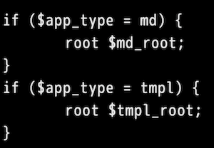
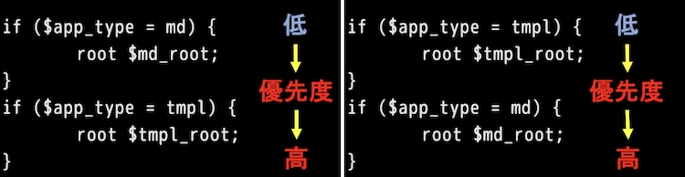

おはようございます。こんにちは。こんばんは。ふぇにっくちゅん です。
この記事までに、cat_mdview と cat_tmplview について解説しました。
どちらも Markdown をブラウザで表示する機能が共通です。
cat_tmplview はその機能の他に、ユーザやグループ単位で表示を切り替える機能を備えています。
今回は、どちらのアプリを使うべきか、どちらも使うべきか、悩む方への解説記事です。
その上で、どちらも使う場合には、nginx を意識しておく必要があるため、その点について解説します。
まず、cat_mdview と cat_tmplview は、Markdown ファイルをブラウザで閲覧するツールとしてはどちらを利用しても問題ありません。
単純に利用するという意味では、表示の切り替え機能が備わっている cat_tmplview のほうが良さそうにみえます。
良さそうに見えるのは、活用の可能性が広がりそうという甘い誘惑に心を奪われてしまったからです。
たしかに、機能の差としては、cat_tmplview の場合は、動的に表示を切り替える機能を備えていることは確かです。
しかし、メリットだけでなくデメリットも把握した上で、状況に合わせて利用しないと、面倒事に巻き込まれてしまいます。
本節では、cat_mdview と cat_tmplview のメリットとデメリットを紹介します。
cat_mdview と cat_tmplview のメリットとデメリットを示します。
たとえば、個人でアプリを利用する場合、cat_mdview が最もコスパが良いことがわかります。
一人で利用するため、ユーザやグループの管理をする必要がなく、動的な表示の切り替え機能は必要ないです。
つまり、無駄に管理コストを増やし、システムを複雑化させるメリットが、個人で利用する価値がないからです。
他にも、オープンなブログサーバとして利用するケースでも同様です。
静的なコンテンツが閲覧できればよいだけであれば、cat_tmlview を利用する意味はありません。
次に、管理面を考えてみましょう。
管理面と言っても、システムやアプリ、設定ファイルのことではありません。
ドキュメントです。
cats_dogs のアプリは、ドキュメントがなければ効果が発揮できないアプリです。
つまり、cats_dogs 視点では、ドキュメントが最も大切なものになります。
このドキュメントが、扱いにくいものになれば、長期に利用できないゴミドキュメントとなり、cats_dogs がゴミを扱う羽目になってしまいます。
この cats_dogs の価値観で、以下のデメリットを考えてみましょう。
テンプレートの記述により、Markdown ファイルの内容が複雑化する
いかにも、Markdown ファイルのメンテナンスに苦労しそうです。
cat_tmplview のユーザやグループ単位で表示を切り替える機能は、便利そうに見えて、cats_dogs の価値観を揺るがす可能性の高い機能であることもわかります。
ここまでは、あえて cat_tmplview の機能をあえてネガティブに見せるように紹介してきました。
甘い誘惑から目を覚ましてもらうためです。
実際には、どちらのアプリが良いということは決められません。
アプリの良さを最大限にするためには、その時の利用シーンや目的を合わせて考える必要があります。
また、これらのアプリを最大限に活用することができれば、ドキュメントが最大限効果を発揮します。
これが、cats_dogs です。
では、cat_mdview と cat_tmplview のどちらを使うか？はあなた次第ということがわかったと思います。
ということは、両方組み合わせて利用することも良いです。
本説では、組み合わせてアプリを使う場合に意識する必要があることを解説します。
ここで意識する必要があるのが nginx です。
では、アプリの設定を思い出してみましょう。
思い出す設定は、mdview.conf と tmplview.conf ともに共通して記述する document_root のパラメータです。
このパラメータは、各アプリが参照する Markdown ファイルの置き場所を示しています。
デモでは、/var/cats/var/www_md/ と /var/cats/var/www_tmpl/ に、各アプリが参照する Markdown ファイルを配置しました。
では、これらのディレクトリに同じファイル名が存在したとき、どちらが優先して表示されるのでしょうか？
これを決めているのが nginx の設定ファイルです。
ここで注目すべきなのは「location / 」で囲われた箇所です。
その中で以下の記述を探してみてください。

この箇所が、2つのアプリの優先度を決めています。
nginx の if は上から評価されていきます。
今回は、どちらのアプリにも同じファイル名の Markdown ファイルが存在しています。
そのため、そのファイルを閲覧しようとした場合には、どちらの if も評価されます。
つまり、最後に評価されたほうが上書きされます。

これもどちらを優先にしたほうが良いかの正解はありません。
どちらを優先したいかを考えた上で、設定を決めてください。
本記事では、2つのアプリ cat_mdview と cat_tmplview について紹介し、その使い分けについて説明しました。
ほとんど機能に差が無いように見えて、実は全く違うアプリに見えてきた人もいるのではないでしょうか？
自分好みに、カスタムできるのが cats_dogs の楽しさでもあるので、みなさんも楽しんでみてください。